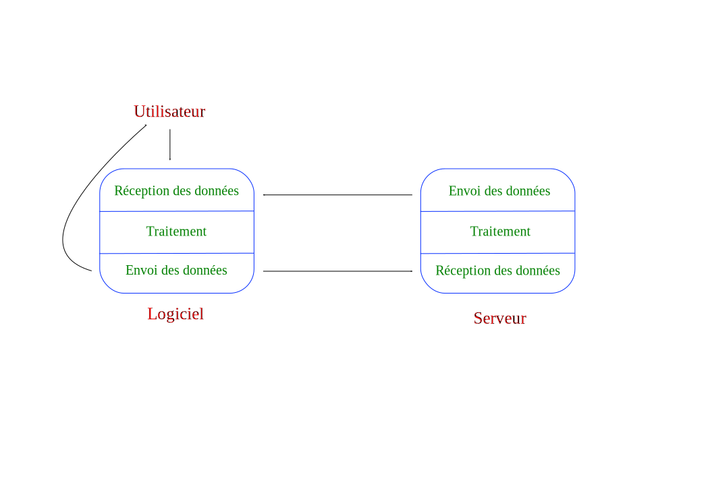
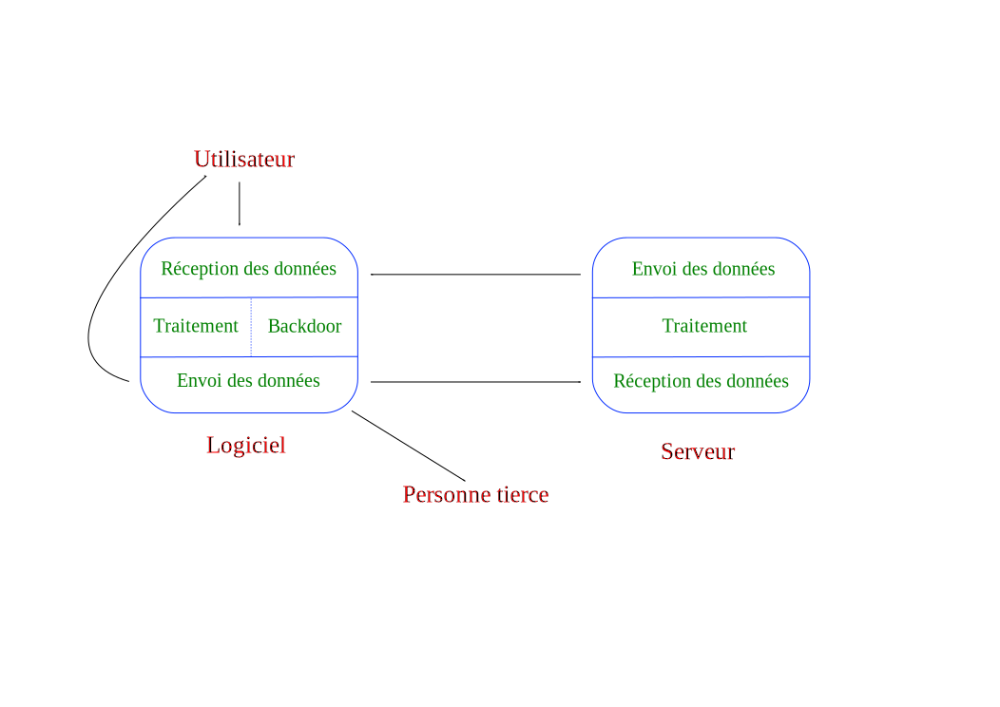

1.2.3 Les Backdoors et la NSA

Qu'est-ce qu'une « porte dérobée » ?
Littéralement « porte de derrière », c'est un programme malveillant intégré dans un logiciel qui permet de donner divers accès aux données à une autre personne.
Schéma fonctionnel


Quelques données ≤ Puissance du backdoor ≤ LE MONDE
Motivations pour intégrer un backdoor :
- Maintenance
- Désactiver le logiciel à distance
- Surveiller l'utilisateur
- Accéder aux données sensibles (mots de passe, cartes bancaires)
- Prendre le contrôle de l'odinateur (envoi de virus, de pourriels)
Les programmes Bullrun et Edgehill

Activités
- Programme de décryptage massif à l'aide de superordinateurs
- Collaborer et faire pression sur les entreprises
- Mettre en place des standards de chiffrement
- Implanter des « taupes » dans les entreprises
- Cyberattaques et espionnage contre les sociétés
_NSAKEY
Backdoor avéré dans Skype
Les logs
65.52.100.214 - - [16/May/2013:13:14:03 -0400] "HEAD /CuArhuk2veg1owOtiTofAryib7CajVisBeb8.html HTTP/1.1" 200 -
65.52.100.214 - - [16/May/2013:14:08:52 -0400] "HEAD /CuArhuk2veg1owOtiTofAyarrUg5blettOlyurc7.php?user=foo&am;pass=yeahright HTTP/1.1" 200 -
Des backdoors dans Linux ?